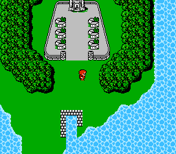
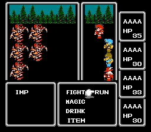

04 / 07 Visual Gallery
36 frames from the current build.
Every image here is a real capture from the project — no renders made for the website, no concept art passed off as gameplay. Each is labelled with the stage it documents: blockout, reconstruction, interface or ROM data.
04.1 Before & after
The original is the reference, not the target.
Two pairings that show what has actually changed — and, honestly, what has not been built yet.

The overworld at Coneria. One screen, tile-stepped movement, four-colour land.

The same geography at 15.625 m per tile. The coastline is the ROM's coastline — the distance and materials are new.

A random encounter against Imps. This is the scene the remake's battle layer must eventually reproduce.
The 3D Imp exists as a field enemy — not a battle screen. Active Time Battle, enemy formations and damage resolution are stage S2 and have not been started.